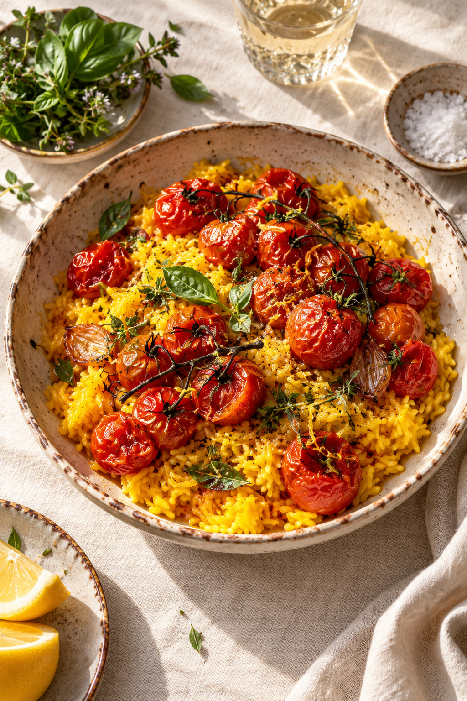

Good food, good company
Come
hungry.
An imaginary supper club for long dinners, generous plates and the stories shared around them.
See what's cooking
Good food, good company
An imaginary supper club for long dinners, generous plates and the stories shared around them.
See what's cooking